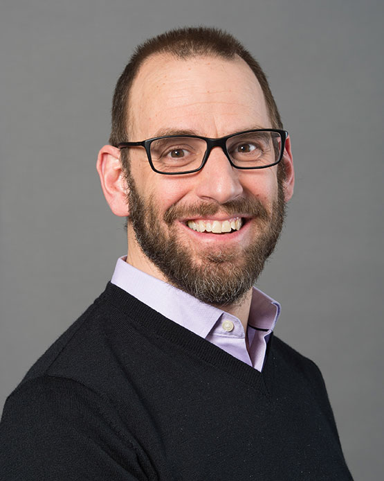

About us
This project will be shaped by input from the multidisciplinary executive group and associated working groups, as well as by the feedback received from the Delphi process.
The executive group is a multidisciplinary and multinational group composed of 12 members. Executive group members will provide expertise on the following areas: ethics, mathematical sciences, social sciences, environmental and physical sciences, public health and medicine, and public interest/knowledge user.
Executive Group Composition
Douglas Manuel (Co-chair)
Public HealthNorth America Dr. Doug Manuel is a Distinguished Professor at the University of Ottawa in the Departments of Family Medicine and School of Epidemiology and Public Health. He is a Senior Scientist at The Ottawa Hospital Research Institute, a Clinical Scientist with C.T. Lamont Primary Health Care Research Centre, Bruyère Research Instituet. He has published over 250 studies, including papers in leading medical journals. He formerly led the CoVaRR-Net wastewater research group. He consults for the World Bank for the development of wastewater surveillance for low and middle-income countries. He developed the Public Health Environmental Surveillance Open Data Model (ODM) used worldwide for wastewater surveillance.
Public Health Environmental Science Infectious Diseases South America Europe
David Buckeridge (Co-chair)
 David Buckeridge is a Professor in the School of Population and Global Health at McGill University in Montreal where he directs the Surveillance Lab, an interdisciplinary group that develops, implements, and evaluates novel computational methods for population health surveillance. He also directs the Anonymized Data Warehouse at the McGill University Health Center, provides informatics advice to the Quebec Institute for Excellence in Health and Social Services, and leads data management and analytics for the COVID-19 Immunity Task Force.
David Buckeridge is a Professor in the School of Population and Global Health at McGill University in Montreal where he directs the Surveillance Lab, an interdisciplinary group that develops, implements, and evaluates novel computational methods for population health surveillance. He also directs the Anonymized Data Warehouse at the McGill University Health Center, provides informatics advice to the Quebec Institute for Excellence in Health and Social Services, and leads data management and analytics for the COVID-19 Immunity Task Force.
His research and practice focus on the informatics of health surveillance and disease control and he holds a Canada Research Chair (Tier 1) in Health Informatics and Data Science. Dr Buckeridge sits on the Expert Panel advising the Canadian government about health systems during the COVID-19 pandemic. He is also a technical advisor to the World Health Organization Epidemic Intelligence from Open Sources (EIOS) program on the application of artificial intelligence to global infectious disease surveillance. Dr Buckeridge holds an M.D. from Queen’s University, a M.Sc. in Epidemiology from the University of Toronto, and a Ph.D. in Biomedical Informatics from Stanford University.
David Moher
 Dr. David Moher is a senior scientist, Clinical Epidemiology Program, Ottawa Hospital Research Institute, where he directs the Centre for Journalology. Dr. Moher is also a full Professor, School of Epidemiology and Public Health, Faculty of Medicine, University of Ottawa. Dr. Moher received an MSc in epidemiology and PhD in clinical epidemiology and biostatistics. Dr. Moher is a fellow of the Royal Society of Canada, and Canadian Academy of Health Sciences. Dr. Moher works in knowledge synthesis; predatory journals; reporting guidelines; and open science.
Dr. David Moher is a senior scientist, Clinical Epidemiology Program, Ottawa Hospital Research Institute, where he directs the Centre for Journalology. Dr. Moher is also a full Professor, School of Epidemiology and Public Health, Faculty of Medicine, University of Ottawa. Dr. Moher received an MSc in epidemiology and PhD in clinical epidemiology and biostatistics. Dr. Moher is a fellow of the Royal Society of Canada, and Canadian Academy of Health Sciences. Dr. Moher works in knowledge synthesis; predatory journals; reporting guidelines; and open science.
Beate Sander
 | Beate Sander, RN MBA MEcDev PhD, holds a Canada Research Chair in Economics of Infectious Diseases, is a Senior Scientist at the Toronto Health Economics and Technology Assessment (THETA) collaborative at the Toronto General Hospital Research Institute, University Health Network (UHN), and Professor at the Institute of Health Policy, Management and Evaluation (IHPME), University of Toronto. |
| Beate Sander, RN MBA MEcDev PhD, holds a Canada Research Chair in Economics of Infectious Diseases, is a Senior Scientist at the Toronto Health Economics and Technology Assessment (THETA) collaborative at the Toronto General Hospital Research Institute, University Health Network (UHN), and Professor at the Institute of Health Policy, Management and Evaluation (IHPME), University of Toronto. |
| |
| Dr. Sander is an internationally recognized leader in infectious disease economics with extensive expertise in health economics and simulation modeling. Her research focus is on assessing infectious disease interventions using simulation modeling and on estimating the burden of infectious diseases using population-based data. Dr. Sander has received several awards for research excellence. |
| |
| Dr. Sander is an expert to national and international advisory bodies, including Canada’s National Advisory Committee for Immunization (NACI), where she chairs the Economics Task Group and co-chairs the Economic Guidelines Task Group – a group tasked with developing national guidelines for the economic evaluation of vaccines, which will set the standard for conducting economic evaluations for vaccines in Canada. Dr. Sander co-chaired the Ontario COVID-19 Modeling Consensus Table from March 2020 to March 2022 and was a member of Ontario’s Science Advisory Table, leading timely COVID-19 evidence generation and knowledge mobilization. Dr. Sander is a member of several Federal expert advisory committees and President of the international Society for Medical Decision Making. |
+———————————————-+—————————————————————————————————————————————————————————————————————————————————————————————————————————————————————————————————————————————————————————————————————————————————————————————————————————————————————————————————————————————————————————————————————+
Mary Jessome
 |
Mary is the lead researcher for CIEDAR’s #BeadAndThrive social media engagement. They joined CIEDAR after working as a research and data analytics officer for the Department of Canadian Heritage, where their focus on equity and inclusion helped inform the governance of Canada’s diverse populations (i.e., 2SLGBTQ+, Persons Living with Disabilities, and Indigenous Peoples). Mary is also a PhD student in the Department of Sociology at the University of British Columbia. Their research focuses on assortative mating patterns among gender diverse (i.e., transgender and non-binary) Canadians and how these patterns reproduce socio-economic inequalities. |
Jeremy Veillard
 |
Jeremy Veillard is a Senior Health Specialist in the Latin America and Caribbean Region of the Health, Nutrition and Population Global Practice at the World Bank. Jeremy is a former health care executive in Canada and France, with deep expertise in quality of care, service delivery performance and health systems research and analytics. Jeremy has a PhD in public health (health systems research) from the University of Amsterdam, The Netherlands and a masters in hospital administration from the Ecole des Hautes Etudes en Santé Publique, France. |
Amy Kirby
 |
Dr. Amy Kirbyis an Environmental Microbiologist in the Waterborne Disease Prevention Branch and the Program Lead for the National Wastewater Surveillance System (NWSS) at the Centers for Disease Control and Prevention (CDC). She has a Bachelor of Science in Agriculture from the University of Georgia, a PhD in Microbiology from the University of Buffalo, SUNY, and a Master of Public Health in Epidemiology from Emory University. At CDC, Dr. Kirby is interested in leveraging environmental microbiology methods to measure pathogens, antibiotic resistance genes, and other health indicators in natural and man-made water systems. |
Kerrigan McCarthy
 |
Dr Kerrigan McCarthy is a specialist pathologist in the discipline of microbiology who specialises in the laboratory diagnosis of infectious disease. She has a PhD in Public Health from Wits. She has worked at the NICD in quality assurance and mycology, and for a number of NGOs doing health system strengthening in the area of TB/HIV integration. She co-ordinated the national evaluation of the GeneXpert technology for the diagnosis of tuberculosis. Since working at the NICD she has supported national and provincial responses to outbreaks, including listeria and SARS-CoV-2. |
Farah Ishtiaq
 |
I am an evolutionary ecologist interested in the ecology and evolution of emerging infectious diseases. My experience in research and conservation is based on 25 years of involvement in various projects around the world. I have a national coordinator of Important Bird Areas programme (India) and conducted research on critically endangered and threatened birds, impact of introduced birds and their parasites (avian malaria in Hawaii) at Smithsonian Institution as a postdoc and vector communities on remote pacific islands (New Caledonia, Vanuatu and nearby islands) as Marie Curie Fellow at University of Oxford, and ecology of avian influenza SE Asia (Mongolia) with Wildlife Conservation Society. As Wellcome Trust/DBT India Alliance fellow, my long-term research explored the epidemiology of avian malaria and spread of disease in high altitude malaria-free zones in the face of climate-change. In my current role at Tata Institute for Genetics and Society, I lead the disease ecology and environmental surveillance—mainly focusing on ecology and population genomics of key mosquito species involved in malaria and dengue transmission in India. I also lead environmental surveillance of SARS-CoV-2 as an early warning system for Bengaluru city and expanding it to other pathogens. |
Matthew Wade
 |
Dr Matthew Wade is Head of Science & Research on the Environmental Monitoring for Health Protection project at the UK Health Security Agency. He helped deliver the English Wastewater Monitoring Programme for COVID-19 from October 2020 to March 2022. Prior to joining the UK Civil Service, he held a Marie Sklodowska-Curie Individual Fellowship, spending two years at McMaster University in Canada where he researched the mathematics and modelling of engineered biological systems, with special interest in the dynamics of microbial ecology. During his time in Canada, he spent 6 months as a visiting fellow at The Fields Institute in Toronto, participating in the “Emergent Challenges in Mathematical Biology” major thematic program. He has spent over 20 years working at the interface of mathematics, engineering and biology within academia and industry, within both research and operational delivery of complex systems in the agriculture, water, energy, and pharmaceutical sectors. He has a Bachelor of Engineering and Master of Science from Newcastle University, and a PhD from Strathclyde University and is a member of the International Water Association and Water Environmental Foundation. He is currently an editor for the Journal of Water & Health, Water Science & Technology, Frontiers in Microbiology, and Bioengineering journals. |
Bernd Gawlik
 |
Dr. Bernd Manfred Gawlikis Portfolio Leader at the European Commission’s Joint Research Centre, where he coordinates the activities on water quality. He holds an Engineering degree from the French Higher Institute for Industrial Chemistry and a Ph.D. on Natural Sciences from Technical University of Munich. In the past two decades he has been working on several major European environmental directives involving chemical monitoring and pollutants of emerging concern. He is a closely involved in the Common Implementation Strategy of the Water Framework Directive, umbrella under which he co-designed the Water Reuse Regulation. During the pandemic, Bernd united the European actors and stakeholder on wastewater-based epidemiology and ensured the speedy translation from knowledge to action as expressed by the respective Recommendation of the European Commission. Bernd is the author/co-author of more than 100 scientific paper, books and reports of the European Commission and promotes novel approaches on water diplomacy. |
Yoni Freedhoff
Primary Affiliation: N/A
Primary Discipline: Public Interest/Knowledge User
Country of Residence: Canada
Bio:
Conflict-of-Interest Statement: